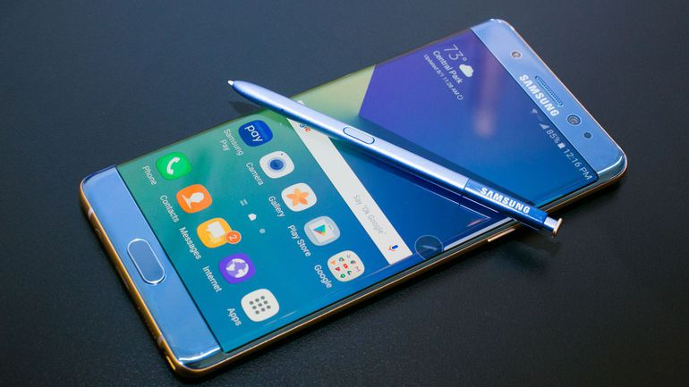
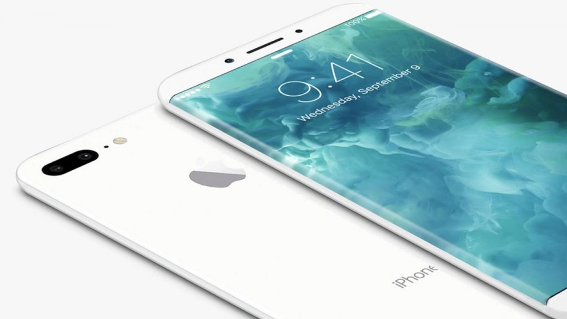
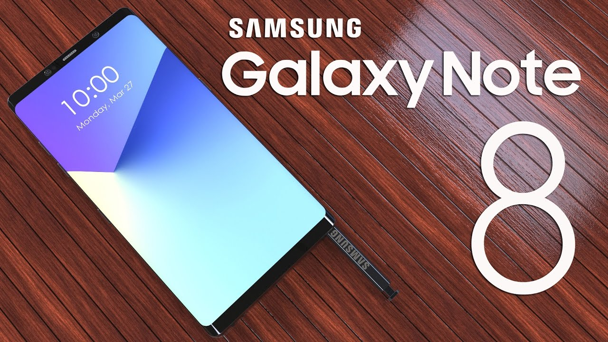
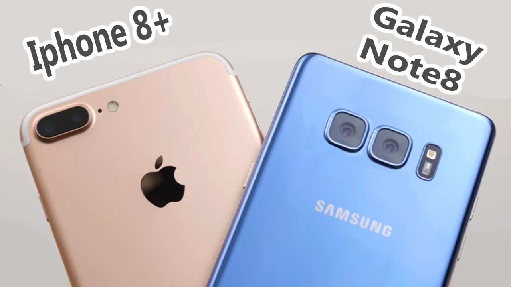
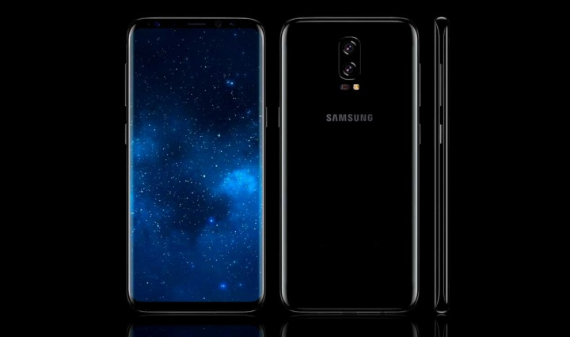

Galaxy Note 8: Samsung Adelanta su lanzamiento
Por: Raúl Escamilla Guevara/Cursos Academia
@rulo_escamilla
Según el sitio asiatico “The Bell” lo mismo que sucedió con el Note 7, samsung planea ponerse un paso adelante con la presentación del nuevo Note 8 en un evento a principios de Agosto.

Samsung presentará su nueva dispostivo el Galaxy Note 8, en un evento a prinicipios de agosto, a pesar de que el año pasado hizo lo mismo con el Galaxy Note 7 y por las “prisas” el telefono llego al mercado con varios desperfectos y errores. Esta vez Samsung quiere reivindicarse y corregir este pequeño gran error que hubo.

Según el sitio “The Bell”, Samsung adelantará el evento para comenzar las ventas antes que el Iphone 8 de Apple, que se rumora con una fecha de presentacion para septiembre. Con el adelanto, Samsung volvería a presentar su telefono insignia de la segunda mitad del año antes del IFA, el evento anual que se celebra en septiembre en Alemania.

The Bell es un sitio poco conocido, sin embargo otros sitios confiables como SamMibile y The Investor han recogido su información en repetidas ocasiones pasadas.

Una decisión similar para el Note 8 era lo más esperado. Sin embargo, “The Bell” dice que el Note 8 se adelantará para no ceder mercado ante Apple su eterno rival y la inminente llegada del Iphone 8. Como se conoce informalmente al telefono que Apple lanzará este año con grandes novedades.
La linea Galaxy Note de Samsung surgió por dos razones:
- 1. Competir con el lanzamiento del Iphone(que en años recientes sucede en septiembre)
- 2. Para abrir un nuevo mercado (Phablets)
A mediados de agosto, para tomar ventaja al gran enemigo, el Iphone 8.

Tradicionalmente, las terminales de la línea Galaxy Note de Samsung han sido presentados con ocasión de la conferencia IFA que tiene lugar en la capital de Alemania, Berlín, durante el mes de septiembre, sin embargo, ya el año pasado la firma asiática decidió romper con esa tradición y adelantarse a este evento.
Con anterioridad se había especulado que Samsung podría tomarse cierto tiempo adicional para el lanzamiento del Note 8, es decir, más allá del tiempo típico de producción de doce meses, con el fin de asegurarse que no existiera algún problema. Pero finalmente, parece que esto no será así el Galaxy Note 8 llegaría en el momento más esperado. Esto con el fin de poder tener ventaja frente al próximo Iphone de Apple. Previsto para mediados de septiembre.

De acuerdo con los rumores que hasta ahora han circulado, se espera que el Samsung Galaxy Note 8 llegue con una pantalla curvada de 6,3 o 6,4 pulgadas, un procesador SnapDragon836 de Qualcomm y una cámara dual de 13 MP con autofocus. Por el momento, el sensor de huellas dactilares integrado en la pantalla ha sido descartado..